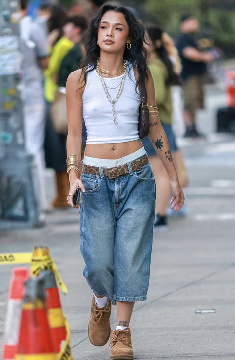
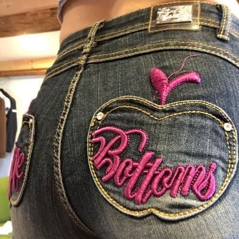
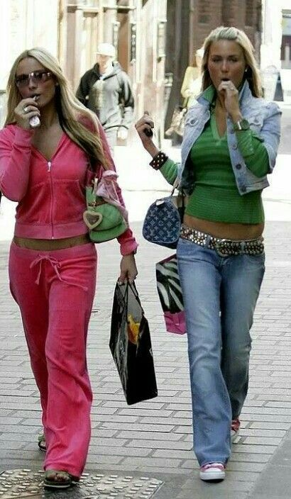
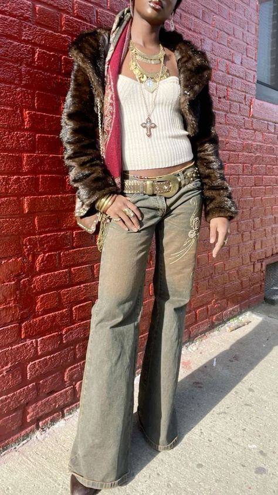

Le style Y2K
Le style Y2K, également appelé "Year 2000", est un mélange d'esthétique rétro et futuriste inspirée des tendances des années 1990 et du début des années 2000. Il se caractérise par des couleurs vives, des matériaux brillants ou métallisés, et des designs évoquant la technologie et la pop culture de cette époque.
Caractéristiques principales :
- Les pantalons taille basse.
- Les mini-jupes et robes en vinyle ou velours.
- Les crop tops, bustiers et hauts à motifs graphiques.
- Les survêtements en velours souvent associés à des marques comme Juicy Couture.
- Les accessoires flashy : lunettes teintées, sacs baguette, colliers en strass, et coques de téléphone décorées.
- Les chaussures plateformes, sneakers massives, ou talons aiguilles audacieux.
Le style Y2K reflète une attitude audacieuse et ludique, parfaite pour celles et ceux qui aiment expérimenter avec des looks nostalgiques tout en restant modernes.
Où acheter des vêtements Y2K ?
- ASOS : Une sélection variée de pièces Y2K, notamment des crop tops, des pantalons taille basse, et des accessoires tendance.
- Urban Outfitters : Articles inspirés du style rétro, comme des survêtements en velours, des mini-jupes et des sacs baguette.
- Depop : Idéal pour dénicher des pièces vintage authentiques et uniques, comme des jeans larges ou des tops graphiques.
- Dolls Kill : Des collections audacieuses avec des vêtements Y2K incluant des couleurs métalliques et des coupes futuristes.
- IMILK : Pour des vêtements Y2K minimalistes et féminins, notamment des robes et des accessoires dans des tons pastel.
- Shein : Des vêtements Y2K à prix abordable, incluant des ensembles coordonnés, des pantalons à motifs et des accessoires flashy.
- Vinted : Une plateforme de seconde main où vous pouvez trouver des pièces vintage directement issues des années 2000.



